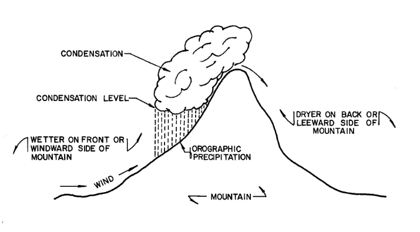

Precipitation¶
Precipitation is the water which falls from the atmosphere in either liquid or solid form.
Course Website
Videos¶
Outline¶
What is precipitation
Point precipitation
Probability estimation Modeling
Design Storms
Areal precipitation
ARF approach
Radar rainfall
Description¶
Precipitation is the water which falls from the atmosphere in either liquid or solid form. It results from the condensation of moisture in the atmosphere due to cooling of a parcel of air. The most common cause of cooling is dynamic or adiabatic lifting of the air. Adiabatic lifting means that a given parcel of air is caused to rise with resultant cooling and possible condensation into very small cloud droplets. If these droplets coalesce and be- come of sufficient size to overcome the air resistance, precipitation in some form results.
Surface water hydrology really begins before the precipitate hits the ground. The form of precipitate is important (rain, sleet, hail, or snow). For example it takes about 10 inches of snow to produce the same water as 1 inch of rain. Other factors of importance are the size of the area over which the precipitation falls, the intensity of the precipitation, and its duration.

Once the precipitation hits the ground several things can happen. It can evaporate immediately, especially if the surface is hot, and relatively impervious. If the surface is dry and/or porous, the precipitate may infiltrate into the ground or may just wet the surface. The process of just wetting leaves and blades of grass is called interception. Some of the infiltrated water is returned to the atmosphere by transpiration by plants. Collectively the return to the atmosphere is called evapotranspiration. The precipitate may be trapped in small depressions (puddles). It may remain in these puddles until it evaporates or until the depressions fill and overflow. Finally it may run off directly to the nearest stream or lake to become surface water. The four “processes” (evapotranspiration, infiltration, interception, and depression storage) that reduce the amount of precipitation available for direct runoff are collectively called abstractions. In drainage engineering, the loss model is how we account for these processes.
Forms of Precipitation¶
Precipitation occurs in various forms. Rain is precipitation that is in the liquid state when it reaches the earth.
Snow is frozen water in a crystalline state, while hail is frozen water in a ‘massive’ state.

Sleet is melted snow which is an intermixture of rain and snow. Of course, precipitation that falls to earth in the frozen state cannot become part of the runoff process until thawing and melting occur. Much of the precipitation that falls in mountainous areas and in the northerly latitudes falls in frozen form and is stored as snowpack or ice until warmer temperatures prevail.
Rain, Sleet, or Snow (YouTube Video)
Types of Precipitation (by Origin)¶
Precipitation can be classified by the origin of the lifting motion which causes the preci pi ta ti on. Each type is characterized by different spatial and temporal rainfall regimens. There are three major types of storms which can be classified as follows:
Convective Storms. Convective storms are atmospheric disturbances characterized by strong upward movement of air. They occur when warm, moist air rises, cools, and condenses, forming clouds and often leading to precipitation.
Orographic Storms. Orographic storms, also known as orographic precipitation or orographic lifting, occur when air is forced to rise over elevated terrain, such as mountains or hills. As the air moves upward, it cools and condenses, leading to cloud formation and precipitation.
Cyclonic Storms. Cyclonic storms, also known as cyclones or hurricanes (depending on the region), are powerful low-pressure systems characterized by rotating winds and organized thunderstorms. These storms typically form over warm ocean waters, where moist air rises and creates an area of low pressure. As the warm air rises, it cools and condenses, forming clouds and releasing heat energy that fuels the storm’s development.
Convective Storms¶
Precipitation from convective storms results as warm moist air rises from lower elevations into cooler overlying air as shown below.

The characteristic form of convective precipitation is the summer thunderstorm. The surface of the earth is warmed considerably by mid-to late afternoon of a summer day, the surface imparting its heat to the adjacent air. The warmed air begins rising through the overlying air, and if proper moisture content conditions are met (condensation level), large quantities of moisture will be condensed from the rapidly rising, rapidly cooling air. The rapid condensation may often result in huge quantities of rain from a single thunderstorm spawned by convective action, and very large rainfall rates are quite common beneath slowly moving thunderstorms.
Orographic Storms¶
Orographic precipitation results as air is forced to rise over a fixed position geographic feature such as a range of mountains. The characteristic precipitation patterns of the Pacific coastal states are the result of significant orographic influences. Mountain slopes that face the wind (windward) are much wetter than the opposite (leeward) slopes. In the Cascade Range in Washington and Oregon, the west-facing slopes may receive upwards of 100 inches (254 cm) of precipitation annually, while the east facing slopes, only a few miles away over the crest of the mountains, receive on the order of 20 inches (51 an) of precipitation annually.

Cyclonic Storms¶
Cyclonic precipitation is caused by the rising or lifting of air as it converges on an area of low pressure. Air moves from areas of higher pressure toward areas of lower pressure. In the middle latitudes, cyclonic storms generally move from west to east and have both cold and warm air associated with them. These mid-latitude cyclones are sometimes called extra-tropical cyclones or continental storms. Continental storms occur at the boundaries of air of significantly different temperatures. A disturbance in the boundary between the two air parcels can grow, appearing as a wave as it travels from west to east along the boundary. Generally, on a weather map, the cyclonic storm will appear as shown in below with two boundaries or fronts developed.
One has warm air being pushed into an area of cool air, while the other has cool air pushed into an area of warmer air. This type of air movement is called a front; where warm air is the aggressor it is a warm front, and where cold air is the aggressor it is a cold front. The precipitation associated with a cold front is usually heavy and covers a relatively small area, whereas the precipitation associated with a warm front is more passive, smaller in quantity, but covers a much larger area, as pictured below.

Tornadoes and other violent weather phenomena are associated with cold fronts.
Precipitation Variables of Interest¶
There are several variables of interest:
Intensity: how hard it rains (a rate)
Duration: how long it rains at any given intensity (a time)
Frequency: how often it rains at any given intensity and duration (a probability)
Spatial Distribution: the rainfall depth over an area (a surface/volume)
Temporal Distribution: the time series of rainfall depth over an area (or point). The point feature is called a hyetograph.
Rainfall probabilities are expressed as a combination of frequency (probability), depth, and duration. The inclusion of depth and duration reflects that different “storms” can produce the same total depth, but deliver that depth over much different times
Note
A slow gentle rain for a long time versus a hard rain for a short time can have the same total depth, but vastly different hydrologic impact
Depth-Duration-Frequency¶
Depth of rainfall is the accumulated depth (in a gage) over some time interval.
Duration is that time interval.
Frequency is the probability (like AEP) of observing the depth over the given duration.

An alternate to DDF is to present the magnitude as an intensity (a rate). The intensity is the ratio of an accumulated depth to some averaging time, usually the duration.
where \(D\) is the depth, and \(T_C\) is the averaging time
Note
Intensity is NOT the instantaneous rainfall rate.
The symbol \(T_C\) represents the time of concentration for a watershed, if the averaging time happens to coincide with the time needed for water to flow from the most remote point in a watershed to the watershed outlet; otherwise its just an arbitrary averaging time.
Intensity is related to depth and duration.

The intensity is the ratio of depth to a particular duration. For example, if the duration or averaging time is 12 hours and the accumulated depth for 12 hours is 70 mm (about 3 inches), then the average rate is 70mm/12hours = 5.8 mm/hour. This average rate, if applied over 12 hours will produce the depth of 70mm.
Conversion from Depth-Duration to Intensity-Duration is obtained by the ratio of depth to duration
Conversion from Intensity-Duration to Depth-Duration is obtained by multiplication
Intensity-Duration-Frequency¶
The family of curves that depicts the relationship between the intensity, duration, and frequency of precipitation at a point is a fundamental part of the rational equation method for storm water drainage design.

Conversion from Depth-Duration to Intensity-Duration is obtained by the ratio of depth to duration
Conversion from Intensity-Duration to Depth-Duration is obtained by multiplication